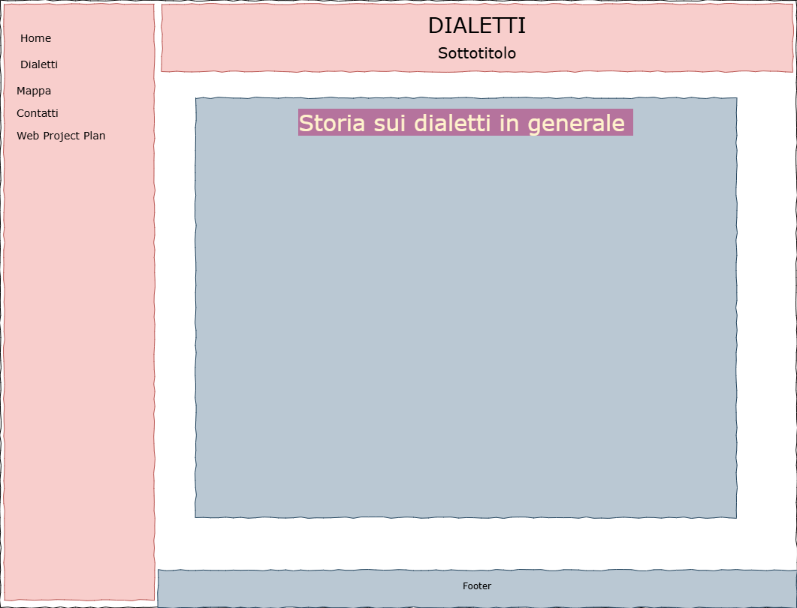
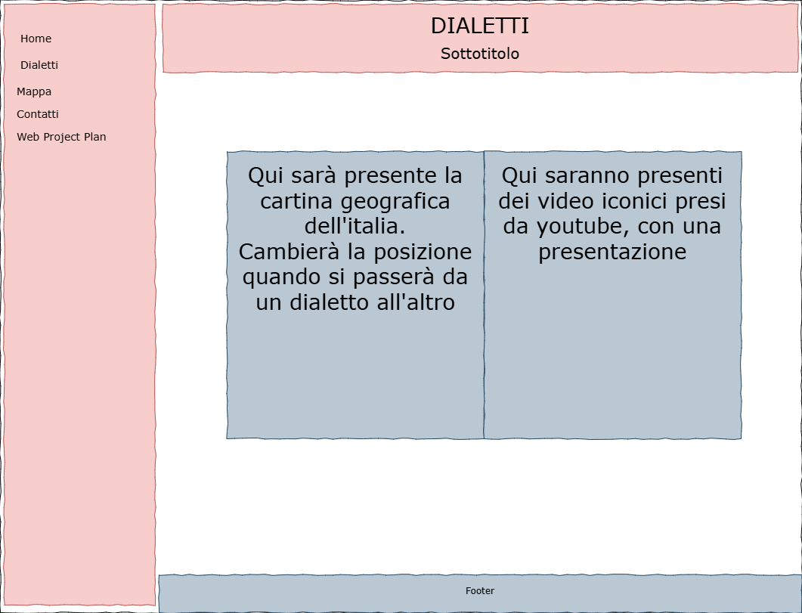

1. Brief
Finalità
Il progetto mira a creare un archivio digitale interattivo per documentare e preservare la diversità linguistica regionale italiana. L'obiettivo è offrire una piattaforma educativa accessibile a tutti, che consenta di esplorare le peculiarità dei dialetti italiani attraverso contenuti informativi, esempi linguistici e materiali multimediali. Il sito favorirà la ricerca e la comparazione tra le varianti linguistiche, contribuendo alla diffusione e valorizzazione delle tradizioni locali.
Pubblico
L'archivio si rivolge a un pubblico di appassionati di cultura locale. Tutti gli utenti avranno accesso agli stessi contenuti, con la possibilità di navigare in base alle regioni e alle categorie tematiche.
Accesso
Il sito sarà fruibile su dispositivi desktop e mobili grazie a un design responsive. I contenuti saranno presentati in forma testuale, visiva e sonora per offrire un'esperienza immersiva. L'interfaccia renderà agevole la navigazione, con strumenti di ricerca avanzati e contenuti multimediali.
Contenuti e dati
I dati di questo progetto sono presi soprattutto da Wikipedia. Il progetto includerà anche contenuti originali, come video presi da YouTube e piccoli glossari, per arricchire l'esperienza degli utenti. L'archivio digitale si configurerà così come uno strumento dinamico e coinvolgente, capace di unire ricerca, apprendimento e valorizzazione del patrimonio linguistico italiano.
2. Benchmark
I siti che ho trovato online sono questi:
-
Dialetti Italiani (Google Sites)
Questo sito offre un’introduzione ai dialetti italiani con un focus specifico sulla loro origine e diffusione. Presenta contenuti utili per chi desidera approfondire la storia e l’evoluzione dei dialetti regionali. Tuttavia, essendo ospitato su Google Sites, la struttura e il design sono piuttosto semplici e potrebbero risultare meno intuitivi rispetto ad altri siti più interattivi. Potrebbe essere utile migliorare la navigabilità e aggiungere risorse multimediali per rendere l'esperienza più coinvolgente.
-
Patrimoni Linguistici
Questo sito rappresenta una risorsa preziosa per lo studio dei dialetti italiani, poiché offre una raccolta di vocabolari dialettali online. È particolarmente utile per ricercatori e appassionati che vogliono confrontare varianti linguistiche. La presenza di materiali documentati e facilmente accessibili rende il sito molto valido dal punto di vista accademico. Tuttavia, potrebbe beneficiare di un'interfaccia più moderna e di strumenti di ricerca più avanzati per facilitare l'esplorazione dei vocabolari.
-
FreeOnline - Directory Dialetti
Questo sito funge da directory di risorse online sui dialetti italiani, raccogliendo link a vari siti che trattano il tema. È utile per chi cerca un punto di partenza per esplorare diverse fonti. Tuttavia, trattandosi di un aggregatore, la qualità e l’affidabilità delle informazioni dipendono dai siti collegati, e la navigazione può risultare meno immediata rispetto a una piattaforma strutturata in modo più approfondito. Un miglioramento potrebbe essere l'integrazione di recensioni o descrizioni più dettagliate dei siti suggeriti.
Questi progetti forniscono una solida base di dati, ma il nostro sito si differenzia per l’approccio interattivo e la possibilità di esplorare il materiale attraverso una navigazione dinamica. Inoltre, il focus sulla cultura e la storia dei dialetti italiani, con esempi pratici e risorse accessibili, lo rende uno strumento utile soprattutto per far appassionare la gente nel riscoprire le proprie e la nostra cultura.
3. Struttura
Mappa concettuale
Il sito sarà strutturato attorno a una mappa concettuale che organizza i contenuti in modo tematico. La homepage fungerà da punto di accesso iniziale, ci sarà un menù a tendina che collegherà la pagina principale con:
- Pagina della mappa
- Pagina dei contatti
- Pagina relativa al web project plan
- Pagina dedicata ai vari dialetti

Schema e albero delle dipendenze
Come notiamo dall'albero delle dipendenze la navigazione per i vari items deriva dalla pagina dialetti, tutte le altre pagine sono collegate da un menu di navigazione. Inoltre si valuterà di inserire dei collegamenti tra i vari items, dando la possibilità di andare direttamente alla pagina successiva (o precedente) senza passare per la pagina dei dialetti.

Categorie degli oggetti
Ogni dialetto e contenuto sarà classificato secondo categorie specifiche:
- Influenze linguistiche: contributi di altre lingue e culture
- Esempi di parole e frasi: termini tipici con traduzione
- Detti popolari: detti nei vari dialetti con traduzione
- Storia: breve storia per visualizzare la formazione del dialetto
Questa struttura garantirà un'organizzazione chiara e una facile accessibilità ai contenuti, rendendo l'esperienza dell'utente più fluida, intuitiva e punta a far sviluppare una certa curiosità al lettore.
4. Layout

.png)


Architettura Logica del Sito
Per facilitare la navigazione tra le diverse sezioni ho scelto di avere un menu di navigazione per tutte le pagine eccetto le pagine dedicate agli item. Il menu di navigazione è a comparsa per non incidere sullo stile delle pagine e ottimizzato per l'utilizzo mobile. Gli items saranno raggiungibili:
- Tramite barra di ricerca nella pagina Dialetti
- Con pulsanti "Precedente" e "Successivo" nei wireframe
Wireframe delle Pagine
Homepage
- Sidebar con link alle sezioni principali
- Intestazione con titolo e descrizione del progetto
- Sezione centrale introduttiva sui dialetti
Pagina Dialetti
- Sidebar di navigazione
- Intestazione con titolo e sottotitolo
- Barra di ricerca per filtrare i dialetti
- Griglia di card rappresentanti i dialetti
Pagina Mappa
- Sidebar di navigazione
- Cartina geografica interattiva (cambia con dialetto selezionato)
- Sezione video con contenuti correlati
Pagina Dialetto Specifico
- Intestazione con nome del dialetto
- Sezioni dedicate:
- Termini più usati
- Detti Locali
- Influenze Linguistiche
- Breve Storia
- Pulsanti "Precedente/Successivo"
- Link per tornare alla pagina Dialetti
5. Usabilità
- Box e sezioni ben definiti: Ogni sezione è separata visivamente per una facile lettura.
- Navigazione multipla: Oltre al menu laterale, i pulsanti di navigazione tra dialetti e la breadcrumb per ogni item migliorano l'usabilità.
- Font leggibili: Caratteri sans-serif moderni per garantire un'ottima leggibilità (es. Arial, Helvetica).
- Componenti intuitivi: Pulsanti grandi, icone chiare () e form ben strutturati.
-
Feedback visivo:
Effetti hover:
- Cambio colore elementi interattivi
- Ingrandimento card/menu al passaggio mouse
- Schema colori: Rosso per enfasi - Bianco/Blu scuro per contrasto
- Icone intuitive: Set Font Awesome per chiarezza (es. icona mappa per la sezione "Mappa")
6. Servizi
Sistemi di Browsing Aggiuntivi
- 🔍 Barra di ricerca avanzata nella pagina "Dialetti"
- 🌍 Mappa interattiva geolocalizzata
- 🔄 Navigazione sequenziale tra dialetti (pulsanti Precedente/Successivo)
- 🧭 Sidebar con menu contestuale
Utilities e Tools
- 📧 Modulo di contatto integrato
- 🗺️ Mappa interattiva con StoryMapJS
- 🃏 Card interattive con hover effects
- 📅 Timeline storica cronologica
- 📱 Pulsanti social sharing (Facebook, Twitter, Instagram)
Strumenti per l'Accesso
- 📱 Layout responsive con Bootstrap 5
- 🎨 Effetti CSS/JS al passaggio mouse
- 📄 Metadatazione Dublin Core
- ⚙️ Ottimizzazione SEO integrata
7. Bibliografia e Sitografia
Fonti testuali
- Wikipedia: https://it.wikipedia.org
Risorse multimediali
- Immagini: Google Immagini (licenze rispettate)
- Video: YouTube
Strumenti
- Sviluppo: HTML5/CSS3/JavaScript, Bootstrap, FontAwesome
- Design: VS Code, Draw.io, Canva
- Documentazione: Google Documenti